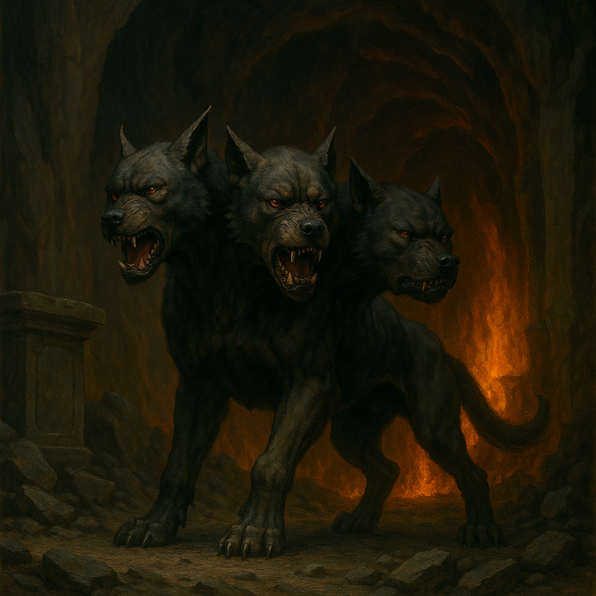
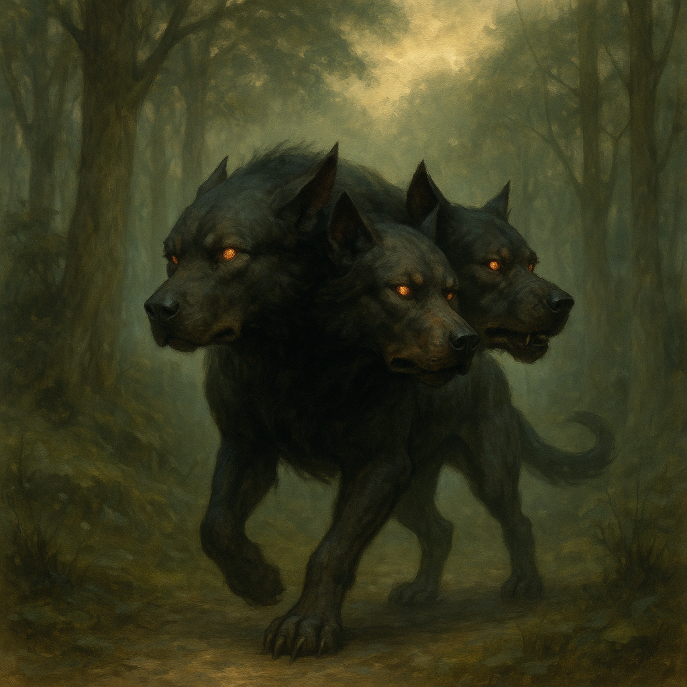
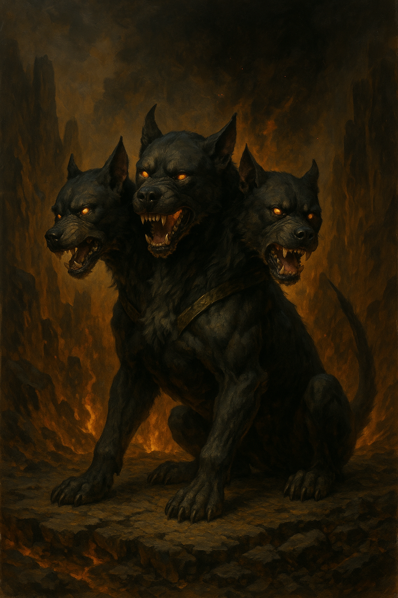

Origin Beyond Death
Long before mortal souls learned to fear death, and long before the underworld had a name, there was Cerberus—not born, but bound, shaped from the last howl of a dying god and the first silence that followed. He was not a beast, but a boundary—the idea of finality, given teeth and form. According to the forgotten verses of the Descent Codex, etched in obsidian bone and buried beneath the Weeping Dunes, Cerberus was summoned into being by the world itself. A response. A guardian. A necessity. For when the dead began to linger and the veil grew thin, something was needed to hold the line.
The Threefold Form
Cerberus bore three heads—not as symbols of brutality, but of perception. One saw the past, one saw the present, and one peered unblinking into the endless dark ahead. His eyes did not glow with fire but with memory—flashes of lives long unlived and deaths not yet claimed. It is said his middle maw never speaks, only listens. The left head murmurs regrets. The right head snarls omens. And when all three howl in unison, even the rivers of the afterlife retreat from their banks. His tail—a serpent of shadow and will—does not strike, but remembers. It winds endlessly, inscribing the names of those who tried to cheat death and failed.
The Pact of Thresholds
The earliest necromancers, deep in the ash-buried city of Karthuun, believed that Cerberus was not merely the guardian of the underworld, but the threshold itself—the living hinge between what was and what must be. To pass without his notice was to never truly die. Thus, the Pact of Thresholds was sworn: that all souls must confront the gaze of Cerberus before crossing the Veil. Those who tried to flee, return, or claw their way back into flesh would feel his breath first—and his fangs second.
When He Walked the Earth
Though most only know him as the eternal sentinel beneath the world, a heretical sect known as the Gravetouched tell of a forgotten age—The Howling Epoch—when Cerberus walked freely across the earth. They say the soil itself recoiled from his paws, leaving scorched paths through forests and deserts alike. In his wake, the dead rose not to haunt, but to follow—silent pilgrims drawn to their master’s passing shadow. Entire cities emptied overnight, not out of fear, but of recognition. Ancient stone pillars discovered in the ruins of Vorth-Alar depict a towering, triple-headed beast flanked by moons in eclipse. Scholars have long debated their meaning, but the Gravetouched believe these mark the exact places Cerberus emerged from the earth to taste mortality—and mark the world with his warning.
The Silence After
At the end of the Howling Epoch, the gods—newly risen and already fearful—bound Cerberus once more, anchoring him to the Gates of the Underworld with chains forged from the last heartbeat of a titan. Not to punish him, but to prevent the world from folding in upon itself. But the bindings are old. And in the quiet spaces between sleep and death, some still claim to see a three-headed hound standing watch—not in the underworld, but at the edge of their own dreams. Waiting.
Modern Echoes
In certain funerary rites, mourners place obsidian shards beneath the tongue of the deceased—offerings to Cerberus, should he sniff too closely. In remote villages, dogs born with multiple heads—real or malformed—are never killed, but worshipped. And when storms roll in without wind, some say it is the sound of Cerberus shifting his weight in the deep, remembering the taste of earth beneath his claws. It is whispered that if he ever walks again, it will not be to punish—but to reclaim what has been wrongfully stolen from death. For thresholds, once ignored, always demand their due.